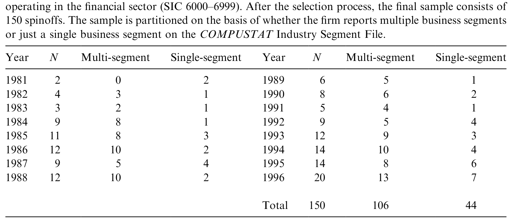
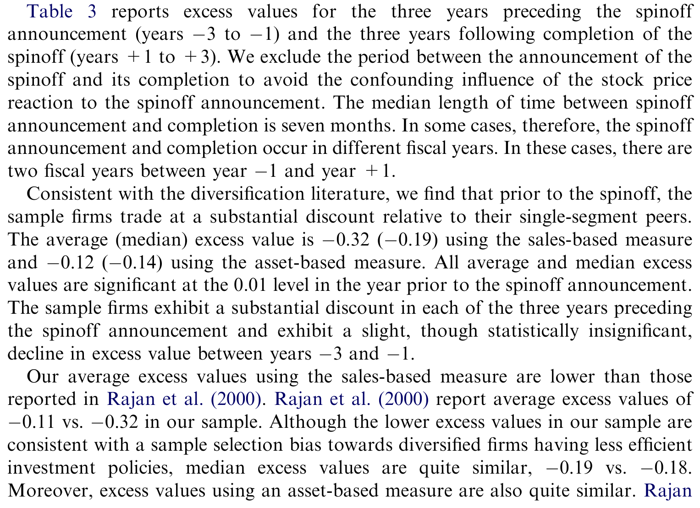
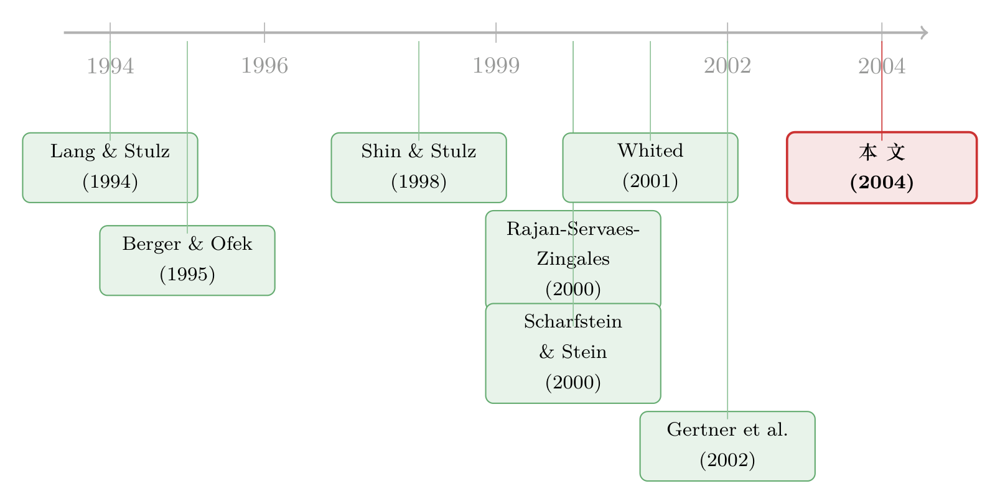

拆开来看，钱才流到对的地方——用「分拆」给内部资本市场做一次活体解剖
本文读的是 Ahn & Denis (2004, Journal of Financial Economics)：作者跟踪了 1981–1996 年间 106 起由多元化公司发起的分拆 (spinoff)，发现这些公司在分拆前被市场打了折、且把钱过多地投在了「差业务」上；分拆之后，高 q 部门的投资显著回升、多元化折价被完全抹平，而价值的改善与投资效率的改善正相关。一句话：把一家「拉郎配」的集团拆开，钱才重新流到了该去的地方。
1 引言：一个争论了十几年、却始终「咬不实」的命题
先抛一个几乎人人都听过的「事实」：多元化公司 (diversified firm) 通常比一篮子同行业的单一业务公司 (single-segment firm) 更不值钱。这个多元化折价 (diversification discount) 既稳健又跨国——美国有，别的发达经济体也有。
折价存在，本身没什么争议。真正争议的，是它到底意味着什么。
一派人说：折价是因为多元化「毁了价值」。更具体的版本是——多元化公司投资投错了地方，对某些部门投得太多，对另一些部门投得太少。这套说法在理论上有 Rajan, Servaes & Zingales (2000) 和 Scharfstein & Stein (2000) 的「内部资本市场阴暗面」模型撑腰，实证上则有 Scharfstein (1998)、Lamont (1997)、Shin & Stulz (1998) 的证据：一个部门的投资，居然会被另一个部门的现金流牵着走，说明集团总部在跨部门「搬钱」，而且搬得并不聪明。
但接着，一个自然的问题是：这真的是「钱配错了」，还是我们量错了？
Chevalier (2000) 和 Whited (2001) 一盆冷水浇下来：部门的投资机会，通常是用「同行业单一业务公司的中位数 Tobin's q」来估的，而这个估计噪声极大。Whited (2001) 直接证明，光是 q 的测量误差，就足以「造出」Shin & Stulz (1998) 那种跨部门资本再配置的假象。再加上 Campa & Kedia (1999)、Graham et al. (2002)、Maksimovic & Phillips (2002) 从另一个角度补刀：多元化和价值之间根本不是因果，而是公司自选择 (endogenous choice) 的结果——本来就更差的公司才去搞多元化。
于是命题就僵在这里：折价是真的低效，还是测量误差加内生性的合谋？横截面地比「多元化公司 vs. 单一业务公司」，永远绕不开这个死结——因为你比的是两群不同的公司。
Ahn & Denis (2004) 这篇文章的全部聪明之处，就在于换了一个比法。
2 识别策略：让同一批业务「自己跟自己比」
真正关键的一步，是研究设计本身。
作者不去横向比两群公司，而是纵向地盯住同一批业务单元：在分拆前，它们捆在一家集团里；在分拆后，其中一部分被拆了出去，成了独立公司。然后比较——同一批业务，在「集团内」和「拆开后」两种状态下，投资行为有没有变。
为什么这一招能绕开测量误差？逻辑很干净：如果部门 q 的估计有噪声，那么这个噪声在分拆前和分拆后同样存在（同一批业务，同样用同行业单一业务公司的中位数 q 来估）。测量误差是「水平」上的偏差，而作者看的是分拆前后的「变化」——差分一下，公共的测量误差就被消掉了。这正面回应了 Chevalier (2000) 和 Whited (2001) 的批评。
为什么偏偏挑分拆 (spinoff)，而不是资产出售 (divestiture) 或股权分割 (carve-out)？因为分拆有几个独一无二的好处：母公司把子公司的股权作为免税股利按比例分给原股东，拆完之后母公司和被拆出去的实体都是独立上市公司，财务数据前后都能看到；而且分拆不涉及任何现金流入、所有权变更或资产重估。这就排除了「投资变化其实是因为拿到了现金 / 换了股东 / 重估了资产」这些干扰，让人更敢把投资政策的变化，归因于内部资本市场被打散这件事本身。
还有一个常被忽视、却很要紧的设计细节：作者在分拆之后，把母公司和被拆出去的子公司的数据重新合并，当作「假如没拆」来算投资政策。这样捕捉的是分拆对投资的总影响——如果母公司投资减少恰好被被拆单元的投资增加抵消，单看任何一边都会漏掉。这一点把本文和只看母公司的 Dittmar & Shivdasani (2003)、只看被拆单元的 Gertner et al. (2002) 区分了开来。
当然，作者自己也老实承认两个软肋：其一，专挑「被拆开」的集团，样本可能偏向那些低效最严重的公司，外推到全体多元化公司要小心；其二，分拆往往伴随着别的变化（比如 Palia & Ye (2002) 指出的高管薪酬重新挂钩），未必所有投资改善都来自「内部资本市场被消灭」。
3 怎么度量「折价」与「低效」
3.1 超额价值：把公司拆成「想象中的零件之和」
折价用超额价值 (excess value, EV) 来量，沿用 Rajan et al. (2000) 的做法：公司的真实价值，减去它的「假想价值」——也就是把每个部门当成独立公司、用同行业单一业务公司的市值/销售额比率加权拼起来。分拆前的销售额口径定义为：
$$EV_s = \left(\frac{MV}{S}\right)_d - \sum_{j=1}^{n} \left(\frac{MV}{S}\right)^{ss}_j \frac{S_j}{S}$$
其中 \((MV/S)_d\) 是多元化公司的市值除以销售额，市值 \(MV\) = 资产账面价值 + 普通股市值 − 普通股账面价值 − 资产负债表递延税；\(S_j\) 是部门 \(j\) 的年末销售额，\(S\) 是各部门销售额之和，\((MV/S)^{ss}_j\) 是与部门 \(j\) 同行业的单一业务公司市值/销售额比率的中位数。行业按三位数 SIC 定义（同行业单一业务公司不足 5 家时退到两位数）。
分拆后，把母公司（\(i=1\)）和各被拆单元（\(i=2,\dots,m\)）合并起来，当作「假如分拆没发生」来算：
$$EV_s = \left(\frac{\sum_{i=1}^{m} MV_i}{TS}\right)_d - \sum_{j=1}^{n+k} \left(\frac{MV}{S}\right)^{ss}_j \frac{S_j}{TS}$$
其中 \(TS\) 是母公司与被拆公司的销售额合计，\(n\)、\(k\) 分别是母公司和被拆单元的部门数，\((n+k)\) 是分拆后存在的部门总数。EV 为负，就是折价。
3.2 投资效率：钱有没有流向「高 q」的业务
低效则用部门层面的行业调整投资 (industry-adjusted investment)，以及两个公司层面的指标来量：
- 相对投资比率 (relative investment ratio, RINV)；
- Rajan et al. (2000) 的相对增加值 (relative value-added, RVA)。
两个指标的正值，都表示公司相对地把更多钱投在了高 q 部门、更少钱投在了低 q 部门。换言之，正值 = 配置有效率，负值 = 钱流向了「差业务」。
4 数据与样本
样本从 Securities Data Corporation (SDC) 的并购库和 CRSP 出发，配合 Dow Jones Interactive 逐笔确认确实是分拆（而非资产出售或股权分割），并用 CCH Capital Change Reports 限定为免税分拆，最后落在 Compustat 上要有公司层和部门层的财务数据、且剔除金融业部门 (SIC 6000–6999)。
这样筛下来，1981–1996 年共有 150 起完成的免税分拆。如下表所示，1980 年代初分拆很少，1990 年代中期略有扎堆，其余年份大体均匀。其中 106 起（71%）由多段业务公司发起，44 起（29%）由单一业务公司发起。由于主检验需要部门级投资数据，全文的核心分析锁定在这 106 起多段业务公司的分拆上。

Table 1: presents the time profile of the sample spinoffs. There are few spinoffs in
几个值得记住的样本特征：被拆单元平均占合并公司市值的 25%；分拆公告引发的三日累计市场调整收益 (MAR) 平均 4.03%（多段公司 3.29%，单段公司 5.77%）；分拆前后公司明显「变专注」了——部门数中位数从 3 降到 2，公司内部行业 Tobin's q 的标准差中位数从 0.29 降到 0.01，销售额赫芬达尔指数从 0.50 升到 0.82（均在 0.01 水平显著）。但有意思的是，被拆出去的到底是高 q 还是低 q 那一块，并没有系统规律——分拆把高低 q 部门分开了，却不偏向拆哪一头。
5 主要结果：折价被抹平，钱重新归位
首先，分拆前确实有折价，而且不小。 分拆前一年，销售额口径的超额价值均值（中位数）是 −0.32（−0.19），资产口径是 −0.12（−0.14），全部在 0.01 水平显著。值得一提的是，本文样本的均值折价比 Rajan et al. (2000) 报告的 −0.11 更深，这恰好和「分拆样本偏向低效公司」的猜测一致——但中位数 (−0.19 vs. −0.18) 和资产口径几乎一样，说明偏差没有失控。
接着，分拆后折价被完全消除。 分拆后一年，销售额口径超额价值均值（中位数）回到 0.05（0.11），资产口径 −0.02（−0.03），没有一个显著区别于零；而从分拆前到分拆后的变化，在 0.01 水平显著。下表把这条「先折价、后归零」的轨迹一目了然地摆了出来。

Table 3: reports excess values for the three years preceding the spinoff
一个看似矛盾的地方：从分拆前一年到分拆后一年，超额价值变化这么大，可分拆公告的股价反应只有区区 4% 左右，对不上啊？作者的解释是：市场早就预期到了某种重组，大部分价值在公告前就已经被打进股价；而且从公告到完成之间（中位数 7 个月），不确定性逐步消解，公司还会继续获得超额收益。证据是：从分拆前一年末到分拆完成，累计市场调整收益平均 11.1%；从完成到完成后，平均还有 6.0%（t 值 1.62）。
然后是机制。 分拆前，公司在高 q 部门的行业调整投资是显著为负的，在低 q 部门则不显著——也就是说，钱被系统性地从「该多投」的地方抽走、堆到了「不该多投」的地方。RINV 和 RVA 分拆前都显著为负，且在分拆前三年持续恶化。分拆后，高 q 部门投资显著回升，RINV 和 RVA 都显著上升、并回到与零无异。更妙的是，这种改善在分拆前一年部门间 q 差异最大的那批公司身上最明显——q 越参差，内部「搬错钱」的空间越大，拆开后纠偏的幅度也越大。作者还排除了「会不会是高 q 部门的成长机会突然变好、而同行 q 没捕捉到」这种替代解释。
最后是把价值和效率钉在一起的那一锤。 控制住现金流变化和投资水平变化之后，从分拆前一年到分拆后一年的超额价值变化，与同期 RINV 或 RVA 的变化正相关。也就是说：投资效率改善得越多的公司，价值回升得也越多。这正是「低效投资假说」第三条预测的核验。
不过作者很克制：点估计显示，投资政策的改善并不足以解释分拆带来的全部价值增加。其余部分可能来自对债权人的财富转移 (Parrino, 1997)、税收与监管好处 (Schipper & Smith, 1983)、便利控制权交易 (Cusatis et al., 1993)、专注度提升 (Daley et al., 1997)、信息不对称下降 (Krishnaswami & Subramaniam, 1999) 等等——这些解释和「低效投资」并不互斥。
6 文献脉络：从「折价」到「为什么折价」，再到「怎么证明」
这条线大致可以这样捋：
起点是「折价」本身。 Lang & Stulz (1994)、Berger & Ofek (1995)、Servaes (1996) 牢牢钉下了多元化折价的存在；Comment & Jarrell (1995) 则记录了 1980 年代中期以来美国公司「重新聚焦」的浪潮，并发现聚焦平均提升股东财富。
接着是「为什么」。 Lamont (1997)、Shin & Stulz (1998) 发现部门投资被别的部门现金流牵动，Scharfstein (1998)、Rajan et al. (2000)、Scharfstein & Stein (2000) 把它上升为「内部资本市场阴暗面」的理论与证据——多元化公司在低效地搬钱。
然后是「等等，你量错了」。 Chevalier (2000)、Whited (2001) 指出部门 q 测量误差足以伪造这些证据；Campa & Kedia (1999)、Graham et al. (2002)、Maksimovic & Phillips (2002) 则把矛头指向内生性，认为折价是自选择而非因果。
于是，本文出现。 Ahn & Denis (2004) 用分拆这个准实验，让同一批业务自己跟自己比，差分掉公共测量误差，给「低效投资假说」补上了一个横截面方法绕不过去的证据。它和同期的 Gertner et al. (2002)、Dittmar & Shivdasani (2003) 互补——后两者分别看被拆单元和母公司，本文看合并后的总效果。（关于「拆公司」的另一种动机——拆开是为了让经理人感到压力、改善治理——可参见《拆掉一家公司，是为了让老板「坐不住」》。）

7 评论与延伸（Q&A + 研究方向）
(a) 几个可能的疑问
Q：用分拆前后差分，真的就把测量误差「消干净」了吗？
消的是水平上的、前后不变的那部分误差。逻辑是：同一批业务、同样用单一业务同行 q 估计，噪声在前后两期同样存在，差分即抵消。但如果测量误差本身随分拆而变化（比如分拆后业务边界更清晰、同行匹配更准），那残余偏差仍可能与「分拆」相关，这条还是软的。作者用替代的边际 q 度量做了稳健性，但无法完全排除。
Q：分拆样本是不是「专挑病人」，结论没法推广？
作者自己承认这一点。本文样本的均值折价 (
−0.32) 比 Rajan et al. (2000) 的−0.11更深，提示样本偏向低效最严重的公司。所以结论应读作「对那些被拆开的集团，低效投资确实存在且分拆纠正了它」，而非「所有多元化公司都低效」。
Q：折价被抹平，会不会只是「均值回归」或行业景气，而非分拆之功？
这是最该担心的。作者的部分防线是：投资效率的改善集中在部门间 q 差异最大的公司，且价值变化与效率变化正相关——纯均值回归不该有这种横截面的异质性。但没有一个干净的「未分拆的多元化公司」对照组做平行趋势检验，是本文识别上最大的留白。
Q：公告股价只涨 4%，可超额价值变化那么大，是不是自相矛盾？
不矛盾，但需要额外假设：市场提前预期了重组（价值提前计入），加上公告到完成间不确定性消解带来的额外收益 (
11.1%)。这套解释合理，却也意味着「4% 的公告效应」并不能作为分拆价值的全部度量。
Q：投资效率改善能解释全部价值增加吗？
作者明说不能。点估计显示投资政策只能解释一部分，其余归于债权人财富转移、税收、控制权交易、信息不对称下降等。这反而是诚实之处——它没有把所有功劳都揽到「内部资本市场」头上。
Q：那「内部资本市场低效」和「自由现金流代理问题」是一回事吗？
不完全是。前者强调跨部门搬错钱（高 q 部门投得太少），后者（Jensen 式）强调总量上投得太多。本文证据更偏向前者：纠正的是配置结构，而非单纯砍掉过度投资。关于后者，可参见《现金为什么一定要「还」出去？——四十年后，重读 Jensen 的自由现金流》。
(b) 几个可能的研究问题与提案
1. 把「债务约束」从混在一起的投资变化里剥出来。 【经济故事】分拆时母公司常常把不成比例的债务留在某一边（Parrino 1997 的 Marriott 案就是经典），这会同时收紧一边、放松另一边的融资约束，从而独立于「q 配置」地改变投资。区分「债务再分配渠道」和「内部资本市场纠偏渠道」很有意思。【可行性】中。需要分拆前后母公司与被拆单元的杠杆与债务条款明细，识别可借鉴分拆时债务划分的横截面差异。相关思路可参见《杠杆这把「刀」，砍向了谁？》。
2. 用现代「交错 DiD」重估这条二十年前的结论。 【经济故事】本文是前后差分 + 简单对比，缺一个干净的对照组与平行趋势检验。用未分拆的多元化公司做对照、并处理分拆时点交错带来的偏误，看结论是否稳健。【可行性】高。Compustat 部门数据齐全，方法上可直接套用近年对交错 DiD 的修正（参见《当「更稳健」的设计悄悄把符号弄反了——重读交错双重差分》）。提醒：已有文献（《拆分真能让公司投得更聪明吗？》）正是用测量误差与内生性质疑过这类结论，值得正面对话。
3. 把镜头转向债权人：分拆如何改写信用利差与债券流动性。 【经济故事】分拆消除多元化折价的同时，也拆散了集团内部的「共保险」效应，单个实体的现金流波动可能上升。股东赚到的，会不会一部分来自债权人？这对公司债定价和二级市场流动性意味着什么？【可行性】中。需要分拆公司在 TRACE / Mergent FISD 上的债券数据，识别可用分拆完成日做事件研究，对比留债一方与轻债一方的利差变化。
4. 内部资本市场低效，在外资持有人多的公司里更轻还是更重？ 【经济故事】若外资机构持有人带来更强的监督或更高的信息要求，集团内「搬错钱」的空间可能被压缩，分拆带来的纠偏幅度也会更小。这把内部资本市场和公司治理的外部约束连了起来。【可行性】中。需要分拆公司在分拆前的机构与外资持股 (如 13F、FactSet) 数据，按外资持股比例分组看 RINV/RVA 改善幅度的横截面差异。
8 我的判断
这篇文章的贡献是方法论上的一记好棋：在一个被测量误差与内生性反复纠缠的命题上，它用分拆这个准实验，让同一批业务自己跟自己比，把「低效投资假说」从「也许是噪声」推进到「至少在被拆开的公司里是真的」。三条预测——折价消除、高 q 部门投资回升、价值与效率改善正相关——环环相扣，证据链相当完整。
但识别上仍有两处我想看得更实：其一，缺一个真正的对照组。全文几乎都是分拆公司自身的前后对比，没有未分拆的多元化公司做平行趋势，「折价消除」里有多少是分拆之功、多少是均值回归或行业景气，难以彻底分开。其二，残余测量误差是否随分拆而变这件事，作者用替代 q 度量做了挡，但没有正面证明它与处理无关。
后续我最想看到的，是把「债务再分配」这条渠道单独识别出来，以及用今天更严的因果工具（带对照组的交错 DiD）给这条二十年前的结论做一次复检——毕竟，同一批 Compustat 数据上，已经有人用测量误差和内生性把相邻的结论推翻过一次了。
参考文献
- Ahn, S., & Denis, D. J. (2004). Internal capital markets and investment policy: evidence from corporate spinoffs. Journal of Financial Economics 71(3), 489–516.
- Berger, P., & Ofek, E. (1995). Diversification's effect on firm value. Journal of Financial Economics 37(1), 39–65.
- Campa, J. M., & Kedia, S. (1999). Explaining the diversification discount. Working paper, Harvard University.
- Chevalier, J. A. (2000). What do we know about cross-subsidization? Evidence from the investment policies of merging firms. Working paper, University of Chicago and NBER.
- Comment, R., & Jarrell, G. A. (1995). Corporate focus and stock returns. Journal of Financial Economics 37(1), 67–87.
- Cusatis, P. J., Miles, J. A., & Woolridge, J. R. (1993). Restructuring through spinoffs: the stock market evidence. Journal of Financial Economics 33(3), 293–311.
- Daley, L., Mehrotra, V., & Sivakumar, R. (1997). Corporate focus and value creation: evidence from spinoffs. Journal of Financial Economics 45(2), 257–281.
- Dittmar, A., & Shivdasani, A. (2003). Divestitures and divisional investment policies. Journal of Finance, forthcoming.
- Gertner, R., Powers, E., & Scharfstein, D. (2002). Learning about internal capital markets from corporate spinoffs. Journal of Finance 57(6), 2479–2506.
- Graham, J. R., Lemmon, M. L., & Wolf, J. (2002). Does corporate diversification destroy value? Journal of Finance 57(2), 695–720.
- Krishnaswami, S., & Subramaniam, V. (1999). Information asymmetry, valuation, and the corporate spinoff decision. Journal of Financial Economics 53(1), 73–112.
- Lamont, O. (1997). Cash flow and investment: evidence from internal capital markets. Journal of Finance 52(1), 83–109.
- Lang, L., & Stulz, R. M. (1994). Tobin's q, corporate diversification, and firm performance. Journal of Political Economy 102(6), 1248–1280.
- Maksimovic, V., & Phillips, G. (2002). Do conglomerate firms allocate resources inefficiently across industries? Journal of Finance 57(2), 721–768.
- Palia, D., & Ye, J. (2002). Diversification and managerial compensation. Working paper, Rutgers University.
- Parrino, R. (1997). Spinoffs and wealth transfers: the Marriott case. Journal of Financial Economics 43(2), 241–274.
- Rajan, R., Servaes, H., & Zingales, L. (2000). The cost of diversity: the diversification discount and inefficient investment. Journal of Finance 55(1), 35–80.
- Scharfstein, D. S. (1998). The dark side of internal capital markets II: evidence from diversified conglomerates. Working paper, NBER.
- Scharfstein, D. S., & Stein, J. C. (2000). The dark side of internal capital markets: divisional rent-seeking and inefficient investment. Journal of Finance 55(6), 2537–2564.
- Schipper, K., & Smith, A. (1983). Effects of recontracting on shareholder wealth: the case of voluntary spinoffs. Journal of Financial Economics 12(4), 437–467.
- Servaes, H. (1996). The value of diversification during the conglomerate merger wave. Journal of Finance 51(4), 1201–1225.
- Shin, H., & Stulz, R. M. (1998). Are internal capital markets efficient? Quarterly Journal of Economics 113(2), 531–552.
- Whited, T. M. (2001). Is it inefficient investment that causes the diversification discount? Journal of Finance 56(5), 1667–1692.